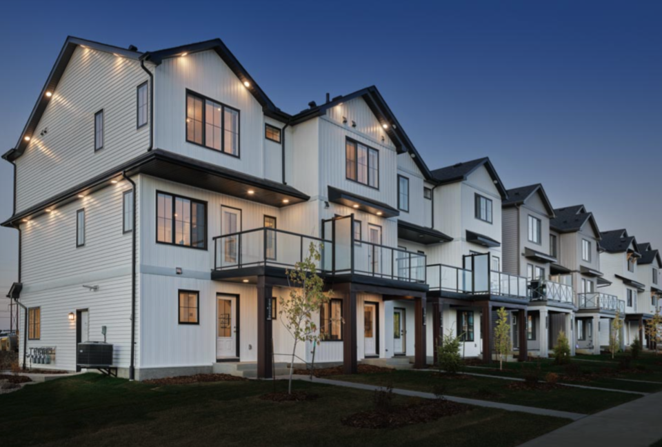
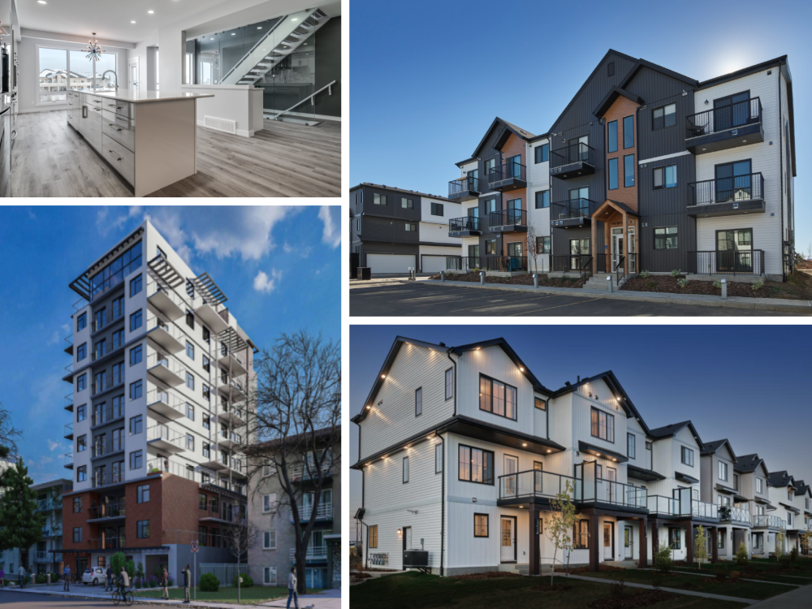

HOUSELYFT
PROPERTY REPORT
725 13th LineInnisfil, ON
Why this report matters…
According to Federal Data, Canadian property owners are currently sitting on an unprecedented $5.22 Trillion in untapped real estate equity.
It is the largest concentrated pile of unused wealth in our country's history!
The information inside this report has been compiled to give you a data-backed opinion on the development viability of your property before you expose your hard-earned capital to risk.
It is designed to help you identify opportunities, unlock trapped equity, generate cashflow, and build wealth by optimizing your property's usage and potential.
This Initial Report:
- Examines Your Local Zoning Bylaw: Find out what your lot bylaws legally allow you to build.
- Identifies Government Grants and Subsidies: Map out your property against active municipal, provincial, and federal grant programs.
- Highlights Specialized Financing Frameworks: Show you possible ways to structure your project's economics to qualify for low-interest, government-backed financing, whenever possible.
This is the first part of a multi-step plan to help you transform your property and reach your development goals.
How to use this report…
Think of this report as a high-level zoning compass. It tells you what the current regulations allow you to build on your property and the possible ways you can use that to your advantage.
It's the first step in a process that takes your property from its current state to maximizing its full potential.
STEP 1FREE PROPERTY REPORT
- What you're allowed to build under current zoning
- Grants & incentives that may be available
- Financing options available
STEP 2BUILDER READY PACKAGE™
- Design Feasibility Report
- Financial Feasibility Report
- Grants & Incentives Report
STEP 3BUILDER MATCHING™
- Matched with a trusted Builder Partner suited to your project & market
- They lead detailed design & permitting
- Through construction & final occupancy
Once your Builder Ready Package™ is complete, we will match you with one of our trusted Builder Partners who is best suited for your project and market. Your builder will then lead the project through detailed design, permitting, construction, and final occupancy.
It's important to remember that this report is compiled using publicly available information. Physical site inspections, full architectural and engineering drawings, and other studies have yet to be completed and will come during Phase 3.
The House Lyft Advantage
House Lyft helps Canadian homeowners unlock the equity trapped in their property and turn it into lasting income — without navigating the development maze alone.
We are the orchestrator of one coordinated path. We confirm what your property can become, build your Builder Ready Package™ — the design, financial, and incentive feasibility that turns an idea into an executable plan — and then match you with one of our trusted, vetted Builder Partners, who leads detailed design, permitting, and construction through to completion.
Instead of stitching together a dozen disconnected vendors — surveyors, designers, brokers, planners, builders — each with their own timeline and their own bill, you get a single guided route from "what can I build?" to keys in hand. One relationship, one plan, one team accountable for getting you there.


1. Property Details
725 13th Line, Innisfil, ON L9S 3C5
Aerial and street-level photography pending a licensed imagery source for this municipality.
| Property Address | 725 13th Line, Innisfil, ON L9S 3C5 |
| Name | Rick Y |
| Contact | On file with House Lyft |
| Development Goals | Multi-unit residential / mixed-use development; owner is seeking a development partner or an investor purchaser |
| Municipality | Town of Innisfil (County of Simcoe) |
| Neighbourhood | Big Bay Point / Friday Harbour area — Lake Simcoe shoreline, southeast Innisfil |
| Cross Streets | 13th Line & 25th Sideroad — directly across from Friday Harbour Resort |
| Servicing | To be confirmed (rural parcels in this area are typically on private well & septic; municipal servicing availability to be verified in Phase 2) |
| Current Bylaw | Town of Innisfil Comprehensive Zoning By-law 080-13 |
| Legal Description | To be confirmed during the feasibility phase |
| Current State | Vacant, privately treed land (no existing dwelling) |
| Lot size | Approx. 4 acres — lot dimensions ~282 ft × 621 ft (≈ 1.63 ha) |
| Development Goals | Multi-unit residential / mixed-use, developed via a rezoning aligned with the surrounding resort community |
Neighbourhood Spotlight
725 13th Line sits in the Big Bay Point area of southeast Innisfil, on the doorstep of one of Simcoe County's most significant tourism destinations:
- Directly across 13th Line from Friday Harbour Resort — a master-planned lakeside community on Lake Simcoe with a 1,000-slip marina, an 18-hole golf course, a beach club, a 200-plus-acre nature preserve and boardwalk, and a growing retail and hospitality village
- On the Lake Simcoe shoreline, minutes from Innisfil Beach Park and the town's waterfront trail network
- Within the Town of Innisfil's long-range growth framework, which anticipates population and tourism-driven investment across the municipality
- Convenient regional access via Highway 400 and the growing town centres of Innisfil and nearby Barrie
- Part of a wider municipal transit and growth conversation, including planned GO rail service improvements serving Innisfil
Location and amenity context above is descriptive background, not a statement of permitted use. Development rights are governed by the zoning and planning framework set out in the sections that follow.
2. Current Zoning
| Current Zoning | RR / Commercial — Residential Rural with a commercial component (Town of Innisfil Comprehensive Zoning By-law 080-13) |
| What the RR zone allows today | The Residential Rural (RR) zone is a large-lot, rural-residential zone. As-of-right it is oriented to a single detached dwelling and associated accessory uses, together with the permitted uses of the parcel's commercial component. The exact permitted-use list and site standards for this lot are to be confirmed against By-law 080-13 during the feasibility phase. |
| Provincial context | Ontario's Bill 23 (More Homes Built Faster Act, 2022) created a province-wide floor of up to three residential units as-of-right — but only on a "parcel of urban residential land" inside a settlement area served by municipal water and sewage. A rural RR parcel on private services would generally fall outside that framework; the parcel's settlement-area and servicing status is to be confirmed. |
| Permitted Uses | As-of-right density on this lot is limited under the current RR / Commercial zoning. The multi-unit residential / mixed-use vision the owner is exploring is not an as-of-right use and would be delivered through a rezoning (Zoning By-law Amendment), most likely paired with an Official Plan Amendment — see Section 3. |
| Development Goals Achievable? | YES — via a rezoning / Official Plan amendment. The site's location adjacent to Friday Harbour and within Innisfil's growth framework gives it a genuine planning case. It is not achievable as-of-right today. Proceed to Step 2 — Builder Ready Package™. |
What this means for you…
- You own a development site, not a finished-rights lot. The value here is in the land and its location — a ~4-acre parcel on the edge of a major resort community — rather than in units you can build under today's zoning.
- The path runs through a rezoning. A residential or mixed-use build at any real density needs the Town to approve new planning permissions (Section 3 walks through what that involves).
- Location strengthens the case. Being directly across from Friday Harbour, on the Lake Simcoe shoreline, in a municipality actively planning for growth, is exactly the kind of context planners weigh when considering additional density.
- Several forms are worth testing. Multi-unit residential, resort-supporting commercial or hospitality, or a mixed-use blend — the Builder Ready Package™ pressure-tests which form fits the site, the servicing, and the market.
⚠️ Time-Sensitive Information
Purpose-Built Rental Tax Rebate
program windows apply
If a portion of the project is delivered as purpose-built rental housing, it may qualify for the federal GST Purpose-Built Rental Housing rebate — a 100% rebate of the 5% federal GST — with Ontario providing a matching rebate of the 8% provincial HST portion. Together this can represent substantial per-unit tax relief on qualifying rental projects with four or more units. These are enhanced, time-limited programs with specific eligibility and construction-start windows; the current windows and qualifying criteria should be confirmed in Phase 2 before relying on them.
Development Charges & Municipal Fees
confirm early
Development charges, parkland and community-benefit contributions in Innisfil are set by the Town's own by-laws and are periodically updated. Where a parcel qualifies, Bill 23 exempts certain additional residential units from development charges. The charges and any area-specific incentives that would apply to this site should be confirmed directly with the Town of Innisfil early in the process, because they materially affect project economics.
CMHC
Canada Mortgage Housing Corporation (CMHC) policy changes can occur at any time, potentially affecting financing options. It is recommended to submit your application as early as possible to reduce any risk.
These figures and program windows were researched from live public sources for this municipality.
Innisfil is outside the engine's pre-verified city set, so treat every zoning, program, and fee figure in this report as provisional until confirmed with the Town of Innisfil and the relevant program administrators during Phase 2.
3. Rezoning (If Applicable)
Rezoning is when the town changes the local planning rules to legally allow more housing units, taller buildings, or different types of uses on a specific piece of land than what the current zoning allows. Think of it as the property getting a "regulatory upgrade".
Likely required for this property.
Under the current RR / Commercial zoning, a multi-unit residential or mixed-use build is not permitted as-of-right. Delivering the owner's vision at real density would proceed through a rezoning (Zoning By-law Amendment), most likely together with an Official Plan Amendment.
As-of-Right vs. The Rezoning Path
| As-of-Right Today (RR / Commercial) | The Rezoning Path (the recommended route) |
|---|
| What you can build | Broadly a single detached rural dwelling plus permitted commercial/accessory uses | Multi-unit residential and/or mixed-use, at a density to be established through the application |
| Change to the zoning by-law | None | Zoning By-law Amendment (and likely Official Plan Amendment) |
| Public consultation | Not required | Statutory public meeting required |
| Council decision | Not required | Required |
| Typical studies | Minimal | Planning justification, servicing, traffic, environmental / conservation, and more, scoped to the site |
Why this site has a real planning case
Location, location
Directly across from Friday Harbour Resort and on the Lake Simcoe shoreline, the parcel sits beside an established, growing master-planned community — the kind of context that supports a request for additional residential or mixed-use density.
A town planning for growth
Innisfil's long-range planning framework anticipates population and tourism-driven investment. Aligning a proposal with the Town's Official Plan direction is central to a successful rezoning.
What this means for 725 13th Line
Because the recommended build is not permitted under the current zoning, a rezoning application is the expected route, and the analysis in this report is framed around that path. The Builder Ready Package™ is where the concept is tested against the Town's Official Plan, the site's servicing, and the market — the work that a credible application, or a well-supported sale to an investor, is built on. This assessment reflects the by-laws and provincial rules understood to be in force at the date of this report and is subject to confirmation with the Town of Innisfil and technical review of site conditions.
Two items to confirm early.
First, servicing — whether municipal water and sewer can serve the site, or whether private services set the density ceiling. Second, environmental regulation — given proximity to Lake Simcoe, part of the site may fall under the Lake Simcoe Region Conservation Authority's regulated area, which can constrain developable land.
4. Development Options
The concepts and any unit figures below are illustrative only. Actual permissions, density, and massing are established through the rezoning process and confirmed in the Builder Ready Package™.
Option A — Baseline: As-of-Right Rural / Commercial Use
The lowest-risk baseline uses the land broadly within its current RR / Commercial permissions — a single detached rural residence and/or the permitted commercial uses of the parcel. This does not require a rezoning, but it also does not capture the site's development upside. It is included as a reference point against which the rezoning options are measured. The exact permitted uses and standards are to be confirmed against By-law 080-13.
Option B — Multi-Unit Residential via Rezoning — Primary Direction
A residential development — townhouse, stacked townhouse, and/or low-rise apartment forms — delivered through a Zoning By-law Amendment (and likely an Official Plan Amendment). On a ~4-acre parcel beside Friday Harbour, this is the direction that best matches the owner's stated goal and the site's location. Achievable density is not fixed today: it depends on servicing, conservation-authority limits, and the Town's Official Plan direction, all of which are tested in the Builder Ready Package™. The illustration is indicative of built form, not an approved unit count.
Option C — Resort-Supporting Commercial / Mixed-Use
The parcel's commercial component and its position opposite a major resort make a hospitality or mixed-use concept — resort-supporting retail, services, or accommodation blended with residential — worth testing. This too would proceed through a rezoning aligned with the Town's Official Plan. It is the option most tied to Friday Harbour's continued growth, and the one where confirming the Town's appetite for the use early is most important.
5. Development Goal Summary
A Rezoning-Led Development Site
725 13th Line is best understood as a ~4-acre development site adjacent to Friday Harbour, not a lot with multi-unit rights already in hand. The recommended direction is a multi-unit residential or mixed-use rezoning that leans on the site's location and the Town of Innisfil's growth framework. Whether the owner intends to develop directly or to sell to an investor, the same next step applies: a Builder Ready Package™ that establishes the achievable density and the strongest planning case turns a location into a defensible, financeable — and more valuable — opportunity.
6. Financing Pathways
How you finance the development of your property can significantly impact your overall ROI, as well as your cashflow and stability.
Many property owners destroy their project margins by trying to use expensive personal cash lines or basic retail bank loans.
A successful project requires institutional underwriting before you ever pull a permit. We partner with national commercial lending desks to bypass conventional retail hurdles, allowing our qualified files to access specialized programs, rates, and terms completely unavailable to the general public.
| Mortgage Refinance | If a property has appreciated in value or the mortgage has been significantly paid down, owners can typically access up to 80% of the property's newly appraised value. |
| Home Equity Line of Credit (HELOC) | Is a flexible, revolving line of credit secured against the equity of an existing property. Unlike a refinance that issues a lump sum, a HELOC functions more like a high-limit credit card tied to your real estate. |
| Construction Financing | Also known as a progress-draw mortgage, construction financing is a short-term loan specifically designed to fund a new build from the ground up (or fund a massive structural overhaul). |
| CMHC MLI-Select | Government-backed multi-unit mortgage insurance. Requires a minimum of 5 rental units. Does not act as a direct grant, but heavily subsidizes project costs. It cuts insurance premiums by up to 30% and extends amortizations to 50 years based on a point system rewarding affordability, energy efficiency, and accessibility. |
7. Available Grants & Incentives
Most property owners don't realize how much government assistance is available to help them complete their project.
Creating housing is a key mandate of government at all levels: federal, provincial, and municipal. The work you are considering undertaking with your property is the exact kind of work the government wants to support!
It's important to note that the timing, criteria, and application processes change regularly. Working with clients across the country, we are intimately familiar with available grants, incentives and programs that may be available for your project.
| Level | Program | Notes |
|---|
| Federal + Provincial | GST/HST Purpose-Built Rental Housing (PBRH) Rebate | For qualifying purpose-built rental projects (generally four or more units, held long-term as rental), a 100% rebate of the 5% federal GST, with Ontario providing a matching rebate of the 8% provincial HST portion. Substantial per-unit relief on eligible rental projects. This is a time-limited enhancement — confirm the current eligibility and construction-start windows before relying on it. |
| Federal | CMHC Apartment Construction Loan Program (ACLP) | Provides low-interest construction loans for purpose-built rental. Minimum $1M loan. Can be structured to bridge into MLI Select permanent financing at project completion. Program terms and availability to be confirmed at application. |
| Federal | CMHC Prefab / Modular Support | CMHC programs bring modular / prefab construction into the financing framework and can shorten construction timelines. Applicability to this project to be confirmed. |
| Municipal | Town of Innisfil — Development Charges & Incentives | Development charges, parkland and community-benefit contributions are set by the Town of Innisfil's own by-laws; where a parcel qualifies, Bill 23 exempts certain additional residential units from development charges. Any area-specific incentives and the exact charges for this site must be confirmed directly with the Town — no figures are assumed here. |
8. Summary
Current Zoning Review
725 13th Line is a ~4-acre parcel zoned RR / Commercial (Residential Rural with a commercial component) under the Town of Innisfil Comprehensive Zoning By-law 080-13, directly across from Friday Harbour Resort on the Lake Simcoe shoreline. Under the current zoning, as-of-right development is limited — broadly a single detached rural dwelling plus permitted commercial uses. The owner's multi-unit residential / mixed-use goal is achievable, but through a rezoning (Zoning By-law Amendment, most likely with an Official Plan Amendment), not as-of-right.
- A location-driven opportunity: the parcel's position beside a major, growing resort community, on the lakeshore, within a town planning for growth, is the core of its development case — and the foundation of any rezoning application or investor sale.
- Two things to confirm first: servicing (municipal vs. private, which sets the density ceiling) and environmental / conservation-authority regulation along the Lake Simcoe shoreline.
Grants & Incentives Review
Governments at the federal, provincial, and municipal levels continue to prioritize housing development by offering grants, rebates, and other incentives to help reduce project costs. Because these programs and their eligibility criteria change frequently, we help identify and navigate the opportunities that may apply to your project, maximizing available funding and improving overall project feasibility. For this site, the purpose-built rental tax rebates and CMHC financing programs are the most relevant to test, alongside the Town of Innisfil's own development-charge framework.
Financing Options Review
Choosing the right financing strategy is essential to maximizing project returns, maintaining healthy cash flow, and reducing financial risk. We work with trusted lending partners to identify financing solutions that align with your development goals, including mortgage refinancing, home equity lines of credit (HELOCs), construction financing, and specialized programs such as CMHC MLI Select. By securing the right financing early in the process, we help position your project for long-term success.
Confidence note.
Innisfil is outside the engine's pre-verified municipality set. The zoning, program, and fee details in this report were researched live from public sources and should be double-checked with the Town of Innisfil and the relevant program administrators before the call and before any investment decision.
Next Steps
Before you can submit for permits, lock in specialized financing, or secure municipal grants, external consultants require site-specific documentation. We break these down into 3 Steps:
Step 1: Zoning — Development Rights and Requirements
In order to ensure that your project plans meet local setbacks, site coverage caps, and height restrictions, you will need the following:
- Site Plan
- Massing Diagram Options
- Unit Mix, Unit Count and Unit Sizes
Step 2: Grants & Incentives
While your project may be eligible for various government rebates and incentives, most programs require documentation that is generated throughout the development and construction process. Applications are generally completed once all required information has been collected.
In order to start the application process you will need a detailed breakdown of the necessary documentation and supporting forms required for each program.
Step 3: Financing Options
This report identifies financing programs that may be suitable for your proposed development. Final financing approval cannot be obtained until the project has progressed through the planning stage and the required financial information, construction budgets, and supporting documentation have been prepared.
The Builder Ready Package™ provides much of the information required by lenders to begin the financing process. Additional lender-specific documentation may also be required depending on the financing program selected.
Roadblocks
Most property owners attempt to gather these documents piecemeal and haphazardly. They spend months going back and forth hiring a private surveyor, then waiting weeks for an independent designer, then shopping around blindly for a commercial mortgage broker, and then trying to negotiate independently with city planners. This uncoordinated approach creates massive friction. By the time they get a single piece of the puzzle solved, their other data is outdated, municipal deadlines have passed, grant pools are fully depleted, and they have burned through thousands of dollars in dead carrying costs.
The House Lyft Advantage
We designed our Phase 2 where over the next 30 days, our lending partners, planning and grants and incentives consultants will compile everything simultaneously into a single next step option for you. This gives you everything required to accurately plan and build your roadmap.
In addition, if you decide to move forward with the project and use one of our approved and vetted builder partners, they will credit you the full cost of your Phase 2 work right back to your construction balance on Day 1.
Your total investment for the Phase 2 blueprint is a single flat fee of
$5,000.00
Getting started is simple:
- Authorize the Phase 2 Work Order: Review and sign our Builder Ready Package Agreement.
- Submit the Phase 2 Payment: to activate our trusted team of consultants.
- Submit the Financial Intake Forms: as provided by our lender partner.
- Book Your Initial Planning Session: set up your initial meeting with our planner and Senior Relationship Manager to finalize your development objectives and plan next steps.